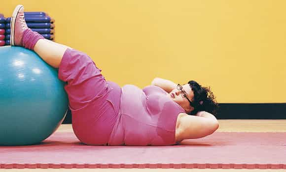
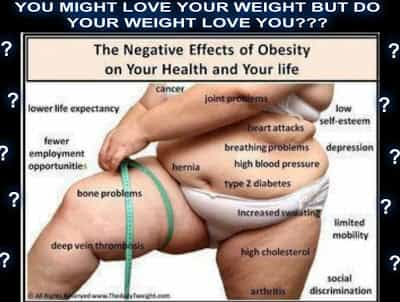

< < < Back
The Horrifying Merger Of Feminism And Fat Acceptance – Return Of Kings
Throughout the last year and a half, there has been an unsettling change taking place in the United States. This change I speak of is an offshoot of the feminist movement entitled “Fat Acceptance.” This movement aims to coddle the insecurities and shortcomings of overweight women, creating in them a sense that they are in fact beautiful and worthy, no matter their body size.
Now I must stop first and say that being overweight does not innately make a woman to be unworthy. I do believe that a woman’s worth lies is many more characteristics than simply her body weight. But one fact we must not ignore is that most overweight women tend to have qualities that aren’t exactly, well, admirable. These qualities include laziness, lethargy, gluttony, and self-esteem issues.
The trait that I can firmly say almost all overweight females share is their lack of ability to take responsibility for their own actions. These women often refer to a variety of explanations that are used to justify their obesity, while exonerating themselves from blame. These explanations include:
1. “Obesity is genetic, it’s not my fault.”
This is the most widely used excuse for obesity that exists in the world today. This reasoning is an absolute sham. There is absolutely no scientific evidence that suggests simply genetics can cause obesity. While there is strong evidence to show that one person may have more of a genetic tendency to become overweight than another, this by no means is a reason valid for one to blame their gelatin-like consistency on. Many celebrities in the public eye who have a family history of obesity have been able to overcome their genetic tendencies with hard work and dedication to a healthy and active lifestyle.
2. “I don’t have 3 hours a day to be in the gym getting thin.”

This excuse may be somewhat valid—they may indeed not have a full THREE hours to be in the gym working out each day. However, three hours are not needed. Two hours are not needed. Nor is even one hour needed.
Research shows that an intense workout of only 30 minutes a day can jump-start weight loss in women, especially when the large muscle groups such as the hamstrings and quadriceps are incorporated into an explosive and intense workout. These muscles are some of the largest in the body, and allow for increased after burn of fat, and a higher metabolic rate up to 5-6 hours after the workout. If women cannot find just 30-45 minutes in their day to actually be healthy and maintain the body they reside in, then a priority change is certainly in order.
3. “I have children.”
Now I’m not going to dispute that taking care of children can be quite a burden on a mother. The constant stress and time obviously takes a toll. But as they care for their children, so a mother must also take some time to care for herself. Children do take time, but as we all know, there are 24 hours in a day—24 hours that I’m willing to bet are not completely used on the children or even other activities. This particular excuse of blaming their obesity on their children is not valid. This excuse it in reality an offshoot of excuse #2. What this excuse truly reflects is a woman who has exceptionally poor time management skills.
Furthermore, the child care excuse includes another component. This component is the weight that is gained during pregnancy. Many women online and in magazines constantly rant about how hard it is to lose the weight after the children are born.
Sure, losing weight is hard. What in life that is worth it isn’t hard? This is the message that we must provide for those who have accepted the poisonous lies that their muffin tops and back boobs are of no consequence of their own actions. If these truths are told, the issue of these excuses could one day be a thing of the past.
Twisted Ideologies
One further disturbing piece of insidious ideology women across the United States have adopted is that they are entitled to have things their way. In an article I recently read by a fat accepting feminist, this feminist shamed a hard-working mother for touting her amazing transformation from overweight after pregnancy, to toned and fit just a few months later.
This feminist claimed such a metamorphosis was nearly impossible. Among the reasons listed for this “impossibility” were time constraints, but also her personal wants. One rather noxious statement this feminist made was as follows: “She should be able to eat what she wants, when she wants.” This was a reason given for why she couldn’t lose post pregnancy weight.
Disturbing Realizations
This statement struck me into a stupor. How could an adult woman be so naive, ignorant, and downright entitled? This questioned brewed in my mind for days after reading her foolish words, opening my eyes to the fact that in America today we have thrown out all common sense and logic.
Yes, we do live in a free country, but that doesn’t mean we should be shameless with our behaviors. Sure, we are all able to do what we want when we want within the law, but is that really a good idea? We are able to smoke cigarettes, and many people do, but is that a healthy idea? We are allowed to eat glass if we really wanted to, but is that a smart idea? I say this to make the point that there are many things out there people want to do, but that simply, and wisely, should not be done.
Dire Consequences
This feminist woman likely also believes she should have everything in her life her way, and that all others must conform to her demands. Her statements show that many women in our country have adopted ideas that are at war with their own bodies and health. They just want to have a good time and live life on their terms and whims.
However, if said women keep living in this dream world, they will be rudely awoken by a tsunami of health problems including hypertension, high cholesterol, joint deterioration, cancer, sleep apnea, and a barrage of other obesity related diseases and disorders. It truly is sad to know that these consequences will befall those who adopt these ideologies, which is why I am doing my best to warn them. I fear that this feminists outlook on life will only be altered after her health has already drastically deteriorated, and finally realizes the error of her ways.

By saying “I want to eat what I want when I want”, women are indicating they believe they have the right to do as they please. The freedom to do as they wish. What they don’t understand is that these attitudes will only take away the freedoms and rights from them later in life.
Perhaps they want to walk on the beach with their granddaughters? They won’t be able to because of joint problems and the issue of their mobility being confined to a wheel chair. They will be unable to travel the world when they retire, as they will have a myriad of health problems preventing them from leaving the immediate area of their hospital or bedroom. They will constantly feel tired and lethargic, never wanting to go out, and therefore missing so many of life’s beautiful moments.
However, the most tragic consequence is that their lifespans will certainly be shortened because of their choices. They will be taking away from themselves the right to live out a long life. All because they couldn’t keep their greasy hands off those microwaved pizza bites they just had to have. BECAUSE IT WAS THEIR RIGHT.
The Dark Road
It is sad the path, that of the fat feminist. It leads to a life of destruction and loneliness. Of illness and turmoil. I now quote Robert Frosts poem “The Road Not Taken.” The quote reads: “Two paths diverged in a yellow wood, and I, I took the one less traveled by, and that has made all the difference.”
This poem illustrates that there are two roads. The road to a life of health and enlightenment, and a road leading to a cliff. A cliff where at the bottom lies a pit full of feminist ideals, and the bodies of those who followed them to the bitter end. I hope that in reading this article, I can inspire in many the ideals of hard work and dedication, leading to a life of health and sober knowledge of the realities we face. To provide inspiration for a life that does not lead to one final leap off a cliff side, across a ravine, fatty arm outstretched, sausage fingers grasping for the last pizza bite, only to end in a dark pit of despair.
 If you like this article and are concerned about the future of the Western world, check out Roosh's book Free Speech Isn't Free. It gives an inside look to how the globalist establishment is attempting to marginalize masculine men with a leftist agenda that promotes censorship, feminism, and sterility. It also shares key knowledge and tools that you can use to defend yourself against social justice attacks. Click here to learn more about the book. Your support will help maintain our operation.
If you like this article and are concerned about the future of the Western world, check out Roosh's book Free Speech Isn't Free. It gives an inside look to how the globalist establishment is attempting to marginalize masculine men with a leftist agenda that promotes censorship, feminism, and sterility. It also shares key knowledge and tools that you can use to defend yourself against social justice attacks. Click here to learn more about the book. Your support will help maintain our operation.
Read More: The Book “Feminism Is For Everybody” Confirms That Feminism Is Not For Everybody


{kind=link}
{kind=link}
{kind=link}
{kind=link}